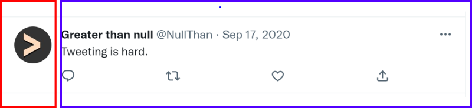
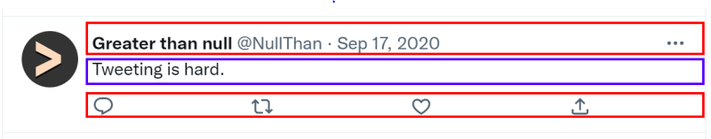
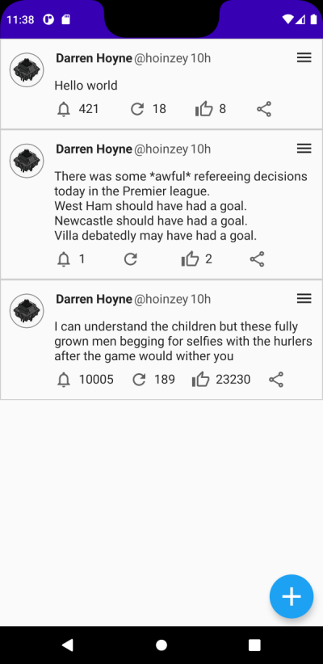

Jetpack Compose: Making a Tweet
30th October 2022
All the code for this can be found here. Building on the previous post which added the floating action button in Twitter style, next I needed to copy the tweets themselves.
The first step is to look at the design and work out the components that are going to make up a tweet.

First I broke it into two columns. The left column which contained the profile image and the right column which contained everything else.
Within the right column I knew I'd need a further 3 rows, the top row would contain the username and ellipsis menu; the second row would contain the content of the tweet; the bottom row would contain the icon buttons.

The top row
The top row is straightforward. It consists of 2 more rows, nested, one arranged to the start and the second filling max width remaining and arranged to the end.

@Composable
fun TopRow(...) {
Row(
modifier = modifier.fillMaxWidth(),
verticalAlignment = Alignment.CenterVertically) {
Row(horizontalArrangement = Arrangement.Start) {
Spacer(...)
Text(...)
...
}
Row(modifier = modifier.fillMaxWidth(),
horizontalArrangement = Arrangement.End) {
IconButton(onClick = { }) {...}
}
}
}
The middle row
The middle row in my example is just a textview, so nothing special. Though in a more fleshed out example you'd need to format images text length etc..
The bottom row
The bottom contains a series of rows, each containing an icon and text if a counter is present.
The horizontal arrangement is SpaceBetween, the spacer is added to ensure the share icon isn't
at the end of the row as that isn't how tweets are styled.
@Composable
fun BottomRow(...) {
Row(
horizontalArrangement = Arrangement.SpaceBetween) {
BottomRowIconWithOptionalCount(count = commentCount, image = Icons.Outlined.Notifications)
...
Spacer(modifier = Modifier.width(20.dp))
}
}
@Composable
fun BottomRowIconWithOptionalCount(...) {
Row(modifier = Modifier.clickable { }) {
Icon(...)
Spacer(...)
Text(...)
}
}
Thats all there is to a tweet. In this example the icons don't match Twitters, the actions and animations haven't been hooked up but the majority of the UI for a tweet can be expressed in around 130 lines of code using Compose.
